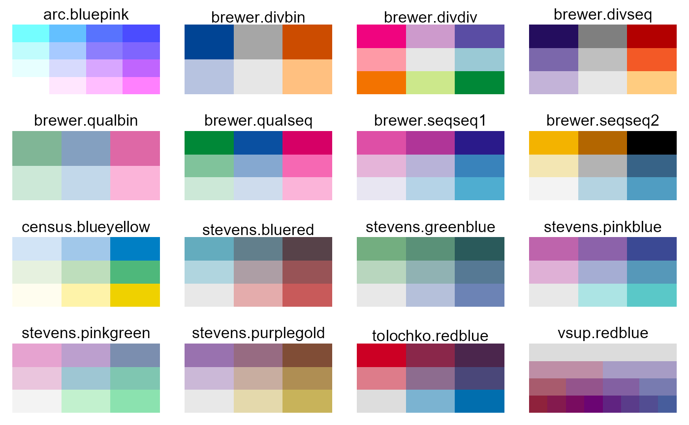

bivariate.RdColor palettes designed for bivariate choropleth maps.
arc.bluepink(n = 9) brewer.qualbin(n = 6) brewer.divbin(n = 6) brewer.divseq(n = 9) brewer.qualseq(n = 9) brewer.divdiv(n = 9) brewer.seqseq1(n = 9) brewer.seqseq2(n = 9) census.blueyellow(n = 9) tolochko.redblue(n = 9) stevens.pinkgreen(n = 9) stevens.bluered(n = 9) stevens.pinkblue(n = 9) stevens.greenblue(n = 9) stevens.purplegold(n = 9) vsup.viridis(n = 32) vsup.redblue(n = 32)
| n | Number of colors to return. |
|---|
A vector of colors as hex strings.
In many of these palette names, the color in the upper left corner is given first, and the color in the lower right corner is given second.
The `brewer.*` palettes use `bin` (binary), `div` (diverging), `qual` (qualitative), `seq` (sequential) for the horizontal and vertical directions.
The `arc.bluepink` palette uses white in the lower-left corner, which makes it difficult to see the difference between low values and missing data on maps.
The `census.blueyellow` palette is slightly different, in that one direction uses lightness, and the other direction uses hue (yellow, green, blue).
The `vsup.*` palettes are Value-Suppressing Uncertainty Palettes.
We strongly recommend not using `vsup.viridis`, because the horizontal axis has changes in brightness, which are confounded with the changes in brightness in the vertical axis.
These palettes are all deliberately chosen to be discrete.
Bivariate color palettes can be difficult to use and interpret. Please be careful.
Joshua Stevens. http://www.joshuastevens.net/cartography/make-a-bivariate-choropleth-map/
Cindy Brewer. http://www.personal.psu.edu/cab38/ColorSch/Schemes.html
Michael Correll AND Dominik Moritz AND Jeffrey Heer. (2018). Value-Suppressing Uncertainty Palettes. https://github.com/uwdata/papers-vsup
Robin Tolochko. http://tolomaps.tumblr.com/post/131671267233/creating-a-bivariate-choropleth-color-scheme
Aileen Buckley. https://www.slideshare.net/aileenbuckley/arc-gis-bivariate-mapping-tools-28903069
https://www.census.gov/population/www/cen2000/atlas/ Total Population, p. 4.
bivcol <- function(pal, nx=3, ny=3){ tit <- substitute(pal) if(is.function(pal)) pal <- pal() ncol <- length(pal) if(missing(nx)) nx <- sqrt(ncol) if(missing(ny)) ny <- nx image(matrix(1:ncol, nrow=ny), axes=FALSE, col=pal) mtext(tit) } op <- par(mfrow=c(4,4), mar=c(1,1,2,1)) bivcol(arc.bluepink) bivcol(brewer.divbin, nx=3) bivcol(brewer.divdiv) bivcol(brewer.divseq) bivcol(brewer.qualbin, nx=3) bivcol(brewer.qualseq) bivcol(brewer.seqseq1) bivcol(brewer.seqseq2) bivcol(census.blueyellow) bivcol(stevens.bluered) bivcol(stevens.greenblue) bivcol(stevens.pinkblue) bivcol(stevens.pinkgreen) bivcol(stevens.purplegold) bivcol(tolochko.redblue) bivcol(vsup.redblue, nx=8)par(op)